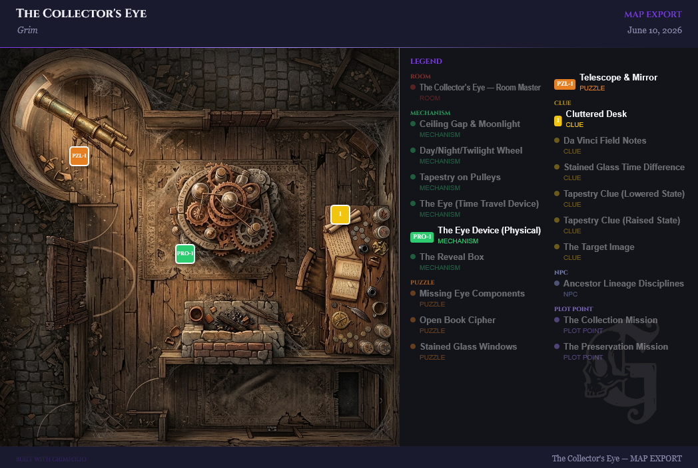

Export & Import
GrimFolio lets you export your project as print-ready documents, shareable maps, hosted links, and portable archive files. You can also import projects from file or directly from Google Drive.
Export Button
The Export button sits in the top-right area of the top bar when a project is open. On desktop it shows as a full labeled button with a download icon. On mobile it is hidden inside the overflow menu.
Clicking Export opens a dropdown menu listing all available export types.
Export Types
Document Exports
These open in a new browser tab formatted for print or PDF save. All include GrimFolio branding. Studio users can replace the GrimFolio mark with a custom logo.
| Option | What it exports |
|---|---|
| Checklist | All card checklists grouped by card |
| Budget | Full project budget breakdown |
| Card Summary | Quick reference sheet of all cards |
| Walk-Through Guide | Full production walk-through narrative |
| Inventory | Project-linked inventory items |
| Chat History | Full Grim AI conversation log |
Map Export (Pro and Studio only)
Map Export generates a static image or PDF of your project floor plan with pins marking card locations and an optional legend.
Opens a modal with options:
- Format — PNG or PDF
- Resolution — 96 dpi (Standard), 192 dpi (High), 300 dpi (Print, PNG only)
- Frame selection — choose which canvas frames define the capture region
- Layer toggles — mirrors, drawing layer, background images, card connections, transparent background

Hosted Exports (Pro and Studio only)
Hosted Exports publish a live, shareable URL for your project data. Anyone with the link can view the export — no GrimFolio account required.
Opens a modal to publish public links for: Walk-Through, Checklist, Budget, Cards, and Map.
Each published export gets a copyable URL, shows a view count, and can be deleted at any time.
- Studio — unlimited hosted exports
- Pro — capped number across all projects
- Free — upgrade prompt shown
Quick Export (.grimfolio)
Downloads immediately. No dialog.
A single JSON file with the .grimfolio extension containing:
- All project metadata
- Canvas nodes, connections, and positions
- Card details: notes, checklists, budget lines, tags, stage
- Pile items
- Anchor, path, and label data
- Walk-Through order
- Document metadata and summaries
- Inventory assignments
Best for: fast backups, sharing bare project structure, small projects with no large media.
Full Export (.grimfolio)
Downloads immediately. No dialog.
A ZIP archive with the .grimfolio extension. Contains project.json plus all binary assets:
| Asset folder | Contents |
|---|---|
assets/card-photos/ |
Card cover photos |
assets/inspiration/ |
Inspiration board images |
assets/attachments/ |
Card file attachments |
assets/canvas-images/ |
Background and upload images on canvas |
assets/grimvision/ |
GrimVision AI-generated images |
assets/documents/ |
Reference documents |
Also included in project.json:
- Full Grim chat history
- Inventory collections, items, and card assignments
- Document full text (for Grim semantic search re-indexing on import)
Best for: full project archival, moving between accounts, picking up exactly where you left off.
Save to Drive
Requires Google connected in Account Settings → Profile tab.
Saves the current project to your Google Drive as a JSON .grimfolio file. Subsequent saves update the same file — no duplicates are created. The button shows Saving to Drive… while in progress, then Saved: [filename] in green when complete.
Import
Import options are found in Account Settings → Data tab. Click your account avatar to open Account Settings, then select the Data tab.
Import from File
Button label: Choose file to import
Accepts .grimfolio, .json, or .zip files.
- Click the button — a file picker opens
- Select a
.grimfoliofile - The app auto-detects the format (ZIP vs JSON) by magic bytes
- Imports as a brand new project — never overwrites an existing one
- Status shows Importing… then Imported '[name]' — opening project… in green
- Automatically navigates to the new project after one second
What gets restored from a Full Export (ZIP):
- All canvas data, cards, connections, and pile items
- Card photos, inspiration images, attachments, and canvas images
- GrimVision images (re-uploaded to storage, remapped to correct cards)
- Full Grim chat history (prevents Grim from auto-creating cards on first open)
- Inventory collections, items, and card assignments (all get new IDs — never merges with existing inventory)
- Reference documents (re-uploaded and re-indexed so Grim can immediately search them)
What gets restored from a Quick Export (JSON):
- All canvas data, cards, connections, pile items, and document metadata
- No binary assets
Google Drive Load
Button label: Load from Drive
- Click — a file list panel opens showing all
.grimfoliofiles in your Drive - Each file shows its name, last modified date, and a Load button
- Click Load — a confirmation dialog appears: "This will replace all current project data. This cannot be undone."
- Confirm — the project loads and the page reloads
Open With GrimFolio (Google Drive)
Users who have installed GrimFolio from the Google Workspace Marketplace can right-click any .grimfolio file in Google Drive and choose Open with GrimFolio.
- Google Drive redirects to
grimfolio.com/drive/open - If not logged in: you are prompted to sign in, then returned to the file automatically
- The file is fetched from Drive and imported as a new project
- You land directly in the restored project
Full Backup
Button label: Download backup
Downloads a single JSON file containing all projects across your account. Use this as a full account snapshot.
Plan Gating
| Feature | Free | Pro | Studio |
|---|---|---|---|
| Quick Export | Yes | Yes | Yes |
| Full Export (ZIP) | Yes | Yes | Yes |
| Document Exports | Yes | Yes | Yes |
| Import from file | Yes | Yes | Yes |
| Google Drive Save and Load | Yes | Yes | Yes |
| Map Export | No | Yes | Yes |
| Hosted Exports | No | Yes (capped) | Yes (unlimited) |
| Custom branding on exports | No | No | Yes |